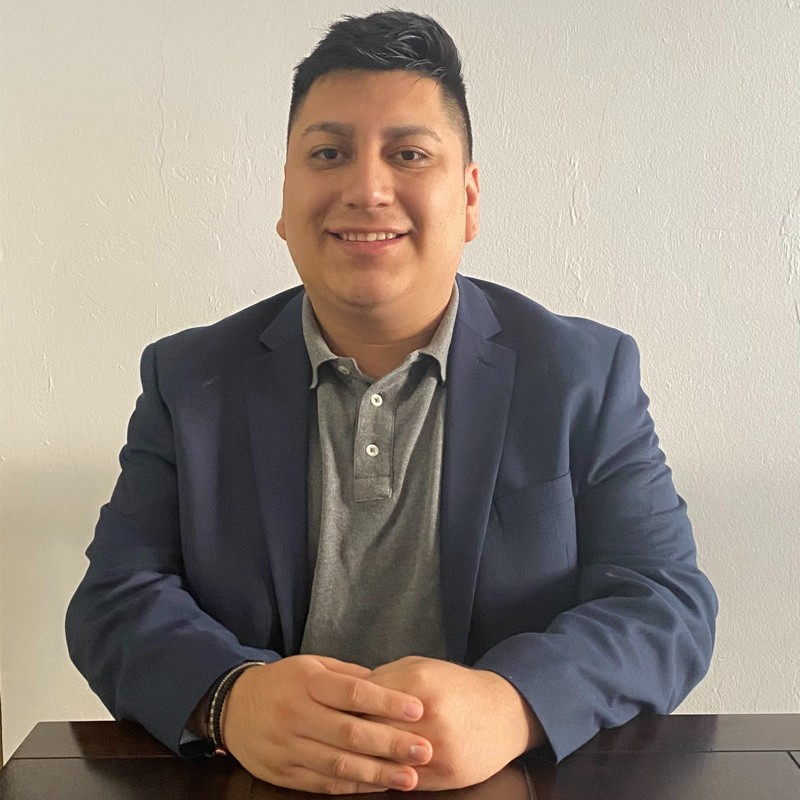

Aldhair Martinez

Summary:
I am a Solutions Engineer at Grafana Labs. I have an interest in observability and application development.
Education Experience:
- Associate in Arts, General - Florida SouthWestern State College (2015-2017)
- Dean's List: Fall 2015 and Spring 2016
- Student Economist Union
- Bachelor's Degree, Economics - Florida Gulf Coast University (2017-2020)
Career Experience:
- Business Development Representative - Binary Defense
Jan 2019 - Apr 2020
Fort Myers, FL
- Binary Defense is the global leader in attack intelligence and advanced managed security solutions. Our motto “Defend. Protect. Secure.“ drives our company to continue to be better and help you defend your company via an Intelligent Security Operations Center (iSOC). Binary Defense was spawned from the need for better monitoring and detection capabilities in companies. The founder of Binary Defense, David Kennedy, also founded TrustedSec which specializes in information security services including penetration testing. The cutting edge, white hat hackers noticed almost every organization with monitoring capabilities really struggled, especially when using an MSSP. Countless attacks went undetected, and breaches were missed which left companies wondering what to do. As a result, Binary Defense was first put into motion in July of 2012 with the development of our Managed Detection, Deception and Response software (Binary Defense Vision) based on profiling how attackers think. A number of years of development, marrying up attack intelligence with our extensive threat intelligence, has made our product the best consolidation of technologies in the industry to predict, prevent, detect, deceive and respond to attacks.
- Vendor Relations Specialist - Ace Hardware Corporation
Jun 2020 - Feb 2021
Fort Myers, FL
- Handle and distribute vendors invoice and credit memos to the correct vendor.
- Assist vendors in escalating chargebacks disputes to the correct department.
- Communicating to warehouse and accounts payable for vendor's needs.
- Efficient use of SAP for all of the vendor’s account balance needs.
- Business Development Representative - Deep Instinct
Feb 2021 - Jul 2021
Fort Myers, FL
- Deep Instinct is the first company to apply deep learning to cybersecurity. Deep learning is inspired by the brain’s ability to learn. Once a brain learns to identify an object, its identification becomes second nature. Similarly, as Deep Instinct’s artificial deep neural network brain learns to prevent any type of cyber threat, its prediction capabilities become instinctive. As a result, any kind of malware, known and new, first-seen malware, zero-days, ransomware and APT attacks from any kind are predicted and prevented in zero-time with unmatched accuracy and speed anywhere in the enterprise – Endpoint, Network, Mobile – enabling a multi layered protection.
- Business Development - Grafana Labs
Jul 2021 - May 2023
New York, NY
- Warmbound Deal of the Year 2021
- Solutions Engineer - Grafana Labs
Jun 2023 - Present
New York, NY
- First SDR to Soultions Engineer in Company History
Skills:
Awards and Certifications:
Other: